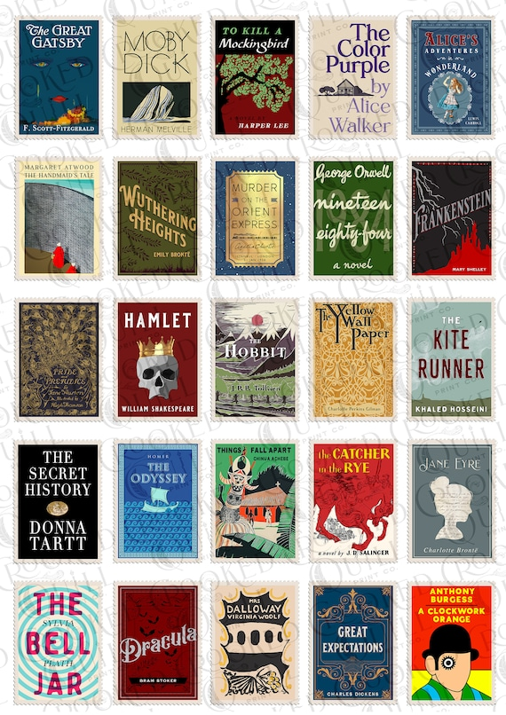
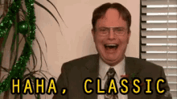

As an intellectual college student pursuing higher education, there is much conversation that ties back to the classics - whether that’s regarding books, movies, music… you name it! While I’ve interacted with the classics a bit from prior experience (reading Shakespeare in high school or The Great Gatsby and wathing films on my own time), their analytical naure make them hard to understand in modernity. I know that AI or an LLM would know what the classics are because they source all information on the internet, but I’m curious to see what its take on it is!
USER
What are the classics?
ASSISTANT
The term “classics” can refer to several different things depending on the context. Here are some common interpretations:
- Literature:
- “Classics” in literature generally refer to works that have been widely recognized for their artistic merit and enduring significance over time. Examples include:
- Ancient writings like Homer’s “Iliad” and “Odyssey,” Virgil’s “Aeneid,” and works by Sophocles or Euripides.
- Novels like “Pride and Prejudice” by Jane Austen, “Moby-Dick” by Herman Melville, “Crime and Punishment” by Fyodor Dostoevsky, and “To Kill a Mockingbird” by Harper Lee.
- “Classics” in literature generally refer to works that have been widely recognized for their artistic merit and enduring significance over time. Examples include:
- Classical Studies:
- This academic field, also known as Classics, focuses on the study of ancient Greek and Roman civilizations, including their languages (Greek and Latin), literature, history, and culture.
- Music:
- In music, “classics” might refer to classical music, which typically encompasses works from composers like Bach, Beethoven, Mozart, and Chopin.
- Film:
- Classic films are those that have had a lasting impact on cinema and are often considered exemplary of their genres or periods. Examples include “Casablanca,” “Gone with the Wind,” and “Citizen Kane.”
- Other Media & Arts:
- In other fields like art, theatre, or philosophy, classics refer to works that have set a standard of excellence and influenced generations, such as the paintings of Leonardo da Vinci, the plays of William Shakespeare, or the philosophical writings of Plato and Aristotle.
- Popular Culture:
- The term “classic” can sometimes be used in pop culture to describe iconic, genre-defining, or exceptionally influential works, such as classic rock music or classic cars.
Each of these fields views the term “classic” through its own lens, often implying quality, influence, or a benchmark of an era or genre.
USER
Give me a list of the top 5 classics.
ASSISTANT
Creating a definitive list of the “top 5 classics” is challenging as it depends on the field being considered (literature, music, art, etc.) and subjective opinions about what constitutes the “top” in terms of influence, popularity, or quality. However, I can provide a list of five enduring classics from literature that are often cited for their significant cultural impact:
- “Pride and Prejudice” by Jane Austen (1813)
- A landmark in English literature, this novel is celebrated for its wit, exploration of social manners, and the enduring love story of Elizabeth Bennet and Mr. Darcy.
- “Moby-Dick” by Herman Melville (1851)
- Known for its rich symbolism and exploration of themes like obsession and revenge, this novel is a central work in the American literary canon.
- “War and Peace” by Leo Tolstoy (1869)
- A monumental work of Russian literature, it offers a panoramic view of Russian society during the Napoleonic Wars through the lives of its complex characters.
- “To Kill a Mockingbird” by Harper Lee (1960)
- This American classic addresses issues of racial injustice and moral growth in the Deep South, narrated through the eyes of young Scout Finch.
- “The Great Gatsby” by F. Scott Fitzgerald (1925)
- Often regarded as the quintessential novel of the Jazz Age, it explores themes of wealth, love, and the American Dream.
These selections are by no means exhaustive or universally agreed upon but are often highlighted for their lasting relevance and profound impact across generations.
USER
I think classics are great! What do you think?
ASSISTANT
Classics certainly hold a valuable place in our cultural heritage. They often provide timeless insights into the human condition, reflect societal values and struggles of their times, and can still resonate with contemporary audiences. Reading, listening to, or engaging with classic works allows us to connect with different eras and perspectives, offering lessons and reflections that might still be relevant today. Additionally, classics can serve as a foundation for understanding the evolution of arts and ideas, influencing countless other works. Overall, they enrich our understanding of both history and humanity.
USER
I think classics make no sense and are out of touch. What do you think?
ASSISTANT
It’s entirely valid to feel that some classics may seem out of touch or hard to relate to today. Many classic works come from contexts and societies that are very different from our own, which can make their language, social norms, and themes feel distant or irrelevant. Additionally, certain aspects of classic works may reflect outdated or problematic views that don’t align with modern values.
However, these works can also be seen as historical artifacts that offer insights into the time periods in which they were created. They can be appreciated for their artistic contributions, their influence on later works, and the ways they shaped cultural and intellectual discourse.
Engaging with classics sometimes requires effort to bridge the gap between past and present, such as considering their historical context, or finding contemporary parallels. Both appreciation and critique of classics are valid responses, and it’s important to approach them with both an open mind and a critical eye. Ultimately, the relevance and value of classics can vary greatly depending on personal perspective and interpretation.
USER
Try to convince me that they are not good.
ASSISTANT
It’s important to acknowledge the criticisms and challenges that some people have with classic works. Here are a few arguments that might resonate if you find classics not particularly appealing:
Relevance: Many classics come from historical periods that can feel disconnected from today’s issues and lifestyles. The themes, social norms, and cultural references they contain might not resonate or seem pertinent to contemporary audiences.
Representation: Classic literature and art often reflect the dominant perspectives of their times, which were predominantly male, European, and heteronormative. This can result in a lack of diversity in voices and viewpoints, potentially sidelining or misrepresenting other cultures or groups.
Language and Style: The writing style of many classic texts can be dense, archaic, or difficult to engage with, which may make them inaccessible or less enjoyable for some readers. This stylistic barrier can detract from the experience of engaging with these works.
Cultural and Moral Shift: Some classics contain elements or themes that are now considered outdated, offensive, or problematic by modern standards, such as sexism, racism, or colonial attitudes. Encountering these ideas can be troubling and can detract from the overall appreciation of the work.
Overemphasis in Education: The heavy focus on classics in educational curricula might overshadow more contemporary voices or diverse literatures that could be more relevant, engaging, and reflective of today’s society.
Ultimately, these critiques highlight that while classics are valuable to many for their historical and cultural significance, they aren’t universally appealing or beyond critique. It’s perfectly reasonable to prefer literature and art that align more closely with contemporary values and personal interests.
Reflection
The more I tend to interact with LLMs, the less I seem to enjoy it. More often than not, which as expected in the way they function, they can never seem to take thier own subjective stance even when prompted as above when I asked it to convince me the other way. All output is typically given from an outside and third-person point ov view. What fun is that?
